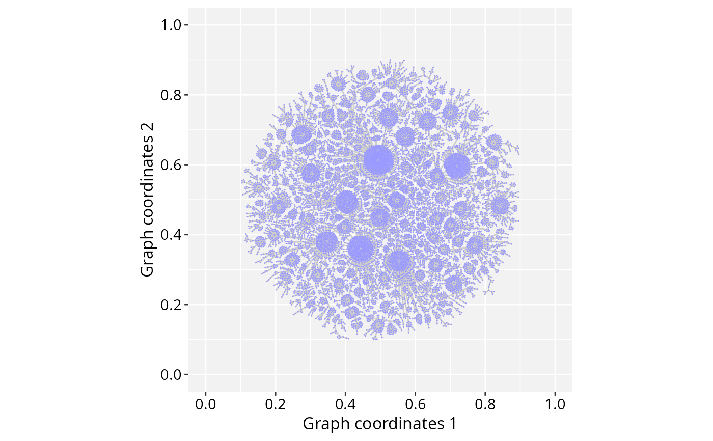

A pruned and laid out igraph object from Pathway Commons V12
Source:R/pspaceMisc.R
PCv12_pruned_igraph.RdThis igraph object was created from a 'sif' file available from the Pathway Commons V12 (Rodchenkov et al., 2020), which was filtered to keep interactions from the following sources: CTD, Recon, HumanCyc, DrugBank, MSigDB, DIP, BioGRID, IntAct, BIND, and PhosphoSite. The igraph was additionally pruned and laid out by a force-directed algorithm aiming signal projection on PathwaySpace's images. Edges with the smallest betweenness centrality were pruned using 'backward elimination' and 'forward selection' strategies. The resulting graph represents the main connected component with the minimum number of edges.
Usage
data(PCv12_pruned_igraph)References
Rodchenkov et al. Pathway Commons 2019 Update: integration, analysis and exploration of pathway data. Nucleic Acids Research 48(D1):D489–D497, 2020. doi:10.1093/nar/gkz946
Examples
data(PCv12_pruned_igraph)
## Suggestion to vizualize this igraph in R:
library(RGraphSpace)
plotGraphSpace(PCv12_pruned_igraph)
#> Normalizing node coordinates to graph space...
